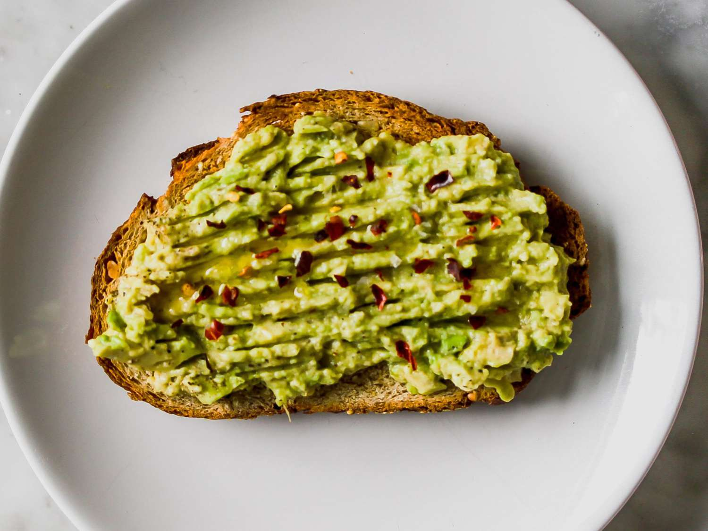

easy avocado toast

this avocado toast is so easy fast to make you'll never have an excuse to skip breakfast again. it's also tasty and customizable, and loaded with healthy fats to start your day right.
ingredients
- piece of bread
- half of an avocado
- dash of salt and groud black pepper
- a bit of lime or lemon juice
- sprinkle of red chilli flakes
steps
- toast the bread using a toaster or pan.
- spread avocado on the toast.
- add remaning ingredients as toppings.
suggestions
- for extra protein, add a scrambled or mashed up boiled egg on top.
- for extra micronutrients, add slices tomatoes to the toast.
- for extra flavor, sprinkle your favorite cheese on top.
- try using a bagel instead of a slice of bread.